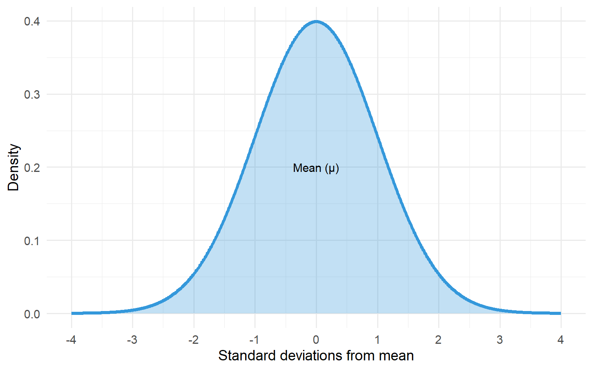
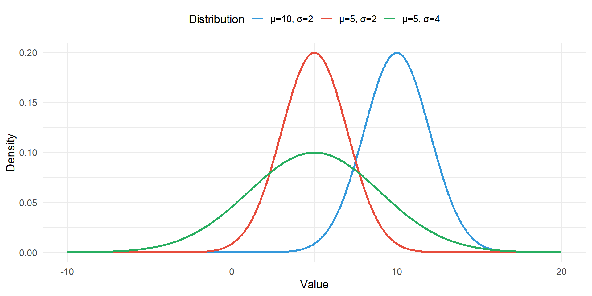
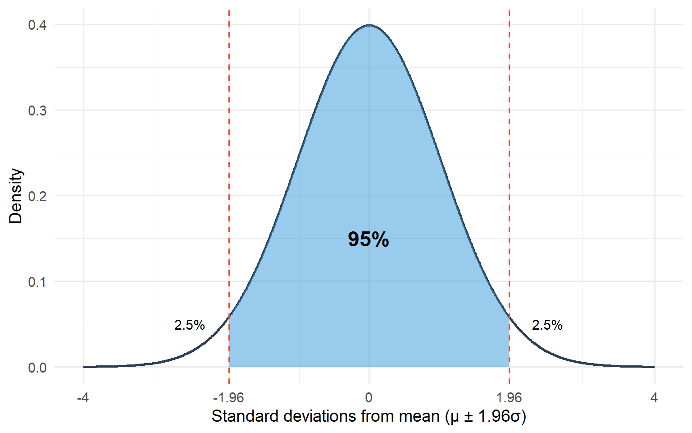
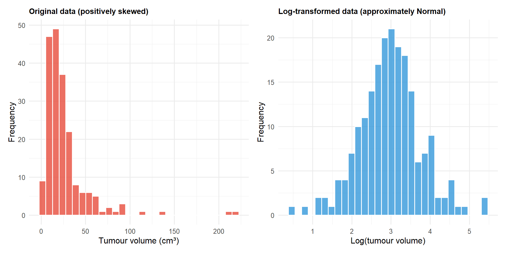

The “normal distribution” is referred to frequently in statistics. It’s a symmetrical, bell-shaped distribution of data. The Normal distribution is a cornerstone of statistics as many statistical methods are built around it. If it did not exist statisticians would have had to invent it.
code
# Generate normal curvex <-seq(-4, 4, length.out =1000)y <-dnorm(x)normal_curve <-tibble(x = x, y = y)ggplot(normal_curve, aes(x = x, y = y)) +geom_line(colour ="#3498db", linewidth =1.5) +geom_area(alpha =0.3, fill ="#3498db") +labs(x ="Standard deviations from mean", y ="Density") +scale_x_continuous(breaks =-4:4) +theme_minimal(base_size =14) +annotate("text", x =0, y =0.2, label ="Mean (μ)", size =4)

Figure 7.1: The characteristic bell-shaped curve of the Normal distribution
It is often the case that the histogram of a continuous variable will display the characteristic bell-shaped distribution of the Normal distribution. The height of women shows a Normal distribution; the box plot shows a symmetric distribution of values above and below the median line.
7.2 Parameters of the Normal Distribution
The Normal distribution is completely described by two population parameters μ and σ, where:
μ (mu) represents the population mean (the centre of the distribution)
σ (sigma) represents the population standard deviation
code
x_vals <-seq(-10, 20, length.out =1000)params_data <-tibble(x =rep(x_vals, 3),y =c(dnorm(x_vals, mean =5, sd =2),dnorm(x_vals, mean =5, sd =4),dnorm(x_vals, mean =10, sd =2)),Distribution =rep(c("μ=5, σ=2", "μ=5, σ=4", "μ=10, σ=2"), each =length(x_vals)))ggplot(params_data, aes(x = x, y = y, colour = Distribution)) +geom_line(linewidth =1.2) +scale_colour_manual(values =c("#3498db", "#e74c3c", "#27ae60")) +labs(x ="Value", y ="Density") +theme_minimal(base_size =14) +theme(legend.position ="top")

Figure 7.2: Normal distributions with different means and standard deviations
7.3 The 95% Reference Range
One property of the Normal distribution is that exactly 95% of the distribution lies between:
This is called a reference range. In this example, it is the range in which 95% of the population lie.
code
x <-seq(-4, 4, length.out =1000)y <-dnorm(x)normal_95 <-tibble(x = x, y = y)ggplot(normal_95, aes(x = x, y = y)) +geom_line(colour ="#2c3e50", linewidth =1) +geom_area(data =filter(normal_95, x >=-1.96& x <=1.96),fill ="#3498db", alpha =0.5) +geom_vline(xintercept =c(-1.96, 1.96), linetype ="dashed", colour ="#e74c3c") +annotate("text", x =0, y =0.15, label ="95%", size =6, fontface ="bold") +annotate("text", x =-2.5, y =0.05, label ="2.5%", size =4) +annotate("text", x =2.5, y =0.05, label ="2.5%", size =4) +labs(x ="Standard deviations from mean (μ ± 1.96σ)", y ="Density") +scale_x_continuous(breaks =c(-4, -1.96, 0, 1.96, 4),labels =c("-4", "-1.96", "0", "1.96", "4")) +theme_minimal(base_size =14)

Figure 7.3: 95% of values in a Normal distribution lie within 1.96 standard deviations of the mean
7.4 Estimating from Sample Data
In practice the two parameters of the Normal distribution are estimated from the sample data: the sample mean (\(\bar{x}\)) and the sample standard deviation (SD).
If a sample is taken from a Normal distribution, and provided that the sample is not too small, then approximately 95% of the sample will be covered by:
In an example where the mean height (\(\bar{x}\)) of women was 1.61 m and the standard deviation (SD) was 0.07 m (i.e. 7 cm):
Approximately 95% of the sample will be covered in the range:
Lower: 1.61 - 1.96 × 0.07 = 1.47 m
Upper: 1.61 + 1.96 × 0.07 = 1.75 m
7.5 The Standard Error
Imagine another random sample of women was selected to investigate their height. The values in this second sample will vary from woman to woman and we would expect the mean value for this new group to be different but not too different from that obtained in the first sample.
The precision with which the sample mean is estimated can be measured by the standard deviation of the mean. This is called the standard error (SE):
Table 7.1: Effect of sample size on standard error
Sample size (n)
Standard deviation
Standard error
5628
0.07
0.0009
20
0.07
0.0157
In the example of 5,628 women the standard error of the mean would be 0.07/√5628 = 0.07/75 = 0.0009 m. Because the sample size is very large the standard error of the mean is very small.
If the sample size was smaller, say 20 women, the standard error of the mean would have been larger: 0.0156 m.
Key Point
Sample size does not influence the size of the sample standard deviation, it influences the precision of the estimated parameters.
7.6 Confidence Intervals
Confidence intervals define the range of values within which the population mean μ is likely to lie. A 95% confidence interval for the population mean is defined by:
In the case of height among the sample of 5,628 women:
SE = 0.0009 m
95% CI = 1.61 ± (1.96 × 0.0009) = (1.608 m to 1.612 m)
The interpretation of the confidence interval is that 95% of intervals will contain the true population mean. This is interpreted as a 95% chance that the population mean will be contained in the interval.
The interval in this example is very narrow due to the large sample size. If the sample size had been 20, the interval would have been wider at (1.58 m to 1.64 m).
7.7 Skewed Distributions
Many statistical tests require data to be Normally distributed. In practice distributions are sometimes not symmetric and can be skewed. Often they display a long right-hand tail (positive skew) or long left-hand skew (negative skew).
Skewed distributions can be made approximately Normal by transforming the original data:
In the case of positively skewed data, taking the log of the data can transform the data into an approximate Normal distribution
In the case of negatively skewed data (long left tail), squaring the data may help
If data are not Normally distributed, then non-parametric methods which do not make assumptions that the data come from a Normal distribution may need to be used.
Example: Log Transformation of Tumour Volume
A common example of positively skewed data in oncology is tumour volume measurements. The following figure shows the distribution of tumour volumes before and after log transformation:
code
set.seed(246)# Generate positively skewed tumor volume data (in cm³)tumor_volumes <-rlnorm(200, meanlog =3, sdlog =0.8)transformation_data <-tibble(original = tumor_volumes,log_transformed =log(tumor_volumes))# Create side-by-side histogramsp1 <-ggplot(transformation_data, aes(x = original)) +geom_histogram(bins =30, fill ="#e74c3c", colour ="white", alpha =0.8) +labs(title ="Original data (positively skewed)",x ="Tumour volume (cm³)",y ="Frequency") +theme_minimal(base_size =12) +theme(plot.title =element_text(size =11, face ="bold"))p2 <-ggplot(transformation_data, aes(x = log_transformed)) +geom_histogram(bins =30, fill ="#3498db", colour ="white", alpha =0.8) +labs(title ="Log-transformed data (approximately Normal)",x ="Log(tumour volume)",y ="Frequency") +theme_minimal(base_size =12) +theme(plot.title =element_text(size =11, face ="bold"))p1 + p2

Figure 7.4: Effect of log transformation on positively skewed tumour volume data
The original tumour volume data (left panel) shows a clear positive skew with a long right tail. After log transformation (right panel), the data displays an approximately Normal, symmetric distribution. This transformation allows us to use statistical methods that assume Normality.
When to Transform Data
Consider transforming data when:
The distribution is clearly skewed (not symmetric)
Outliers are present on one side
Statistical tests require Normality assumptions
The transformed data will be easier to interpret in context
7.8 The Central Limit Theorem
The distribution of sample means will be nearly Normally distributed (whatever the distribution of measurements among individuals). It will get closer to a Normal distribution as the sample size increases.
This feature of mean values comes from the Central Limit Theorem and is very useful in the analysis of proportions.
Practical Implication
Even if the underlying data are not Normally distributed, the distribution of sample means will approach a Normal distribution as sample size increases. This is why many statistical tests work well even with non-Normal data, provided the sample size is large enough.
7.9 Summary
Concept
Description
Normal distribution
Symmetric, bell-shaped distribution
Population mean (μ)
Centre of the distribution
Population SD (σ)
Spread of the distribution
95% reference range
μ ± 1.96σ contains 95% of population
Standard error (SE)
SD/√n - precision of estimated mean
95% confidence interval
\(\bar{x}\) ± 1.96×SE - range likely to contain population mean
Central Limit Theorem
Sample means are approximately Normal regardless of underlying distribution